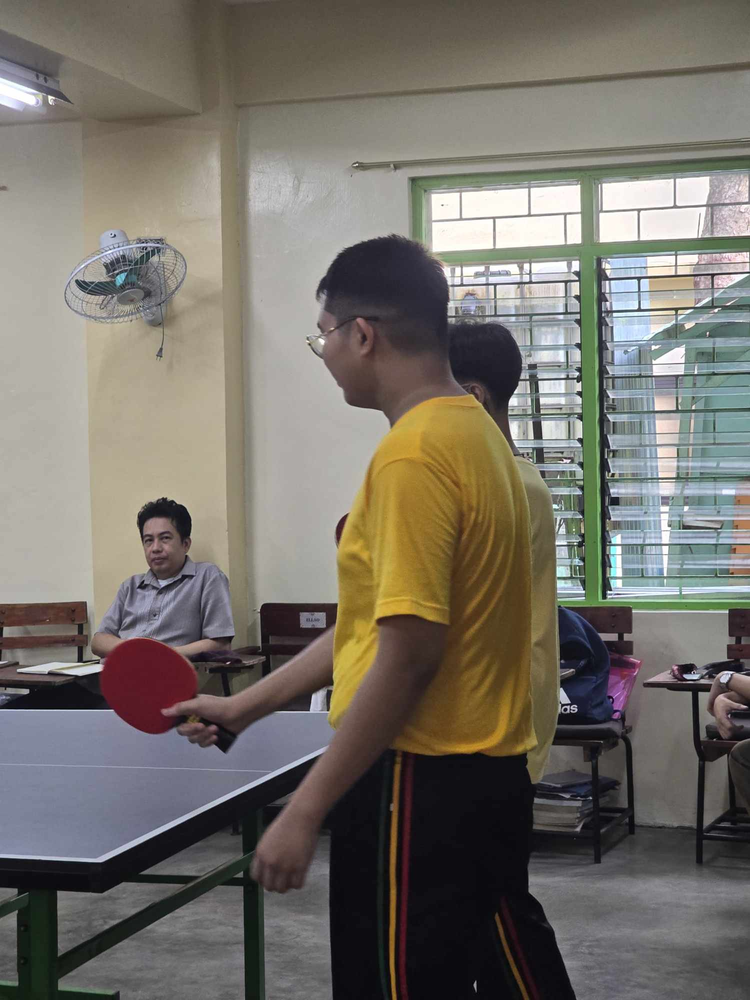
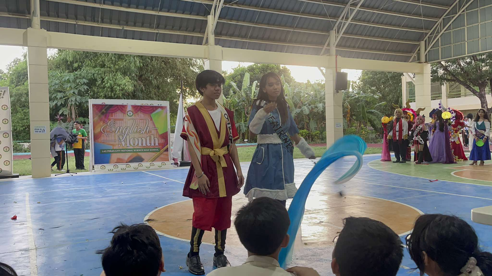
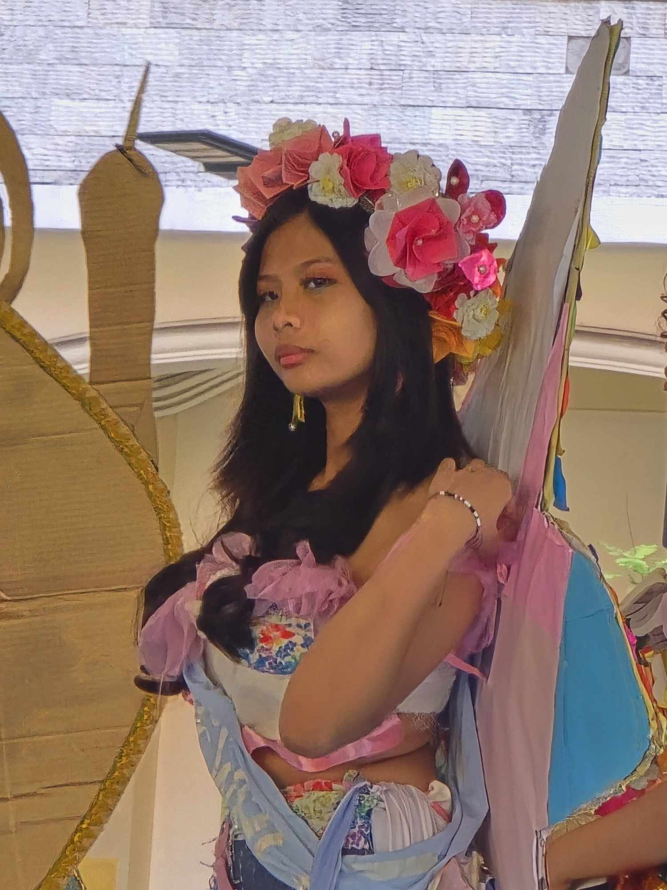
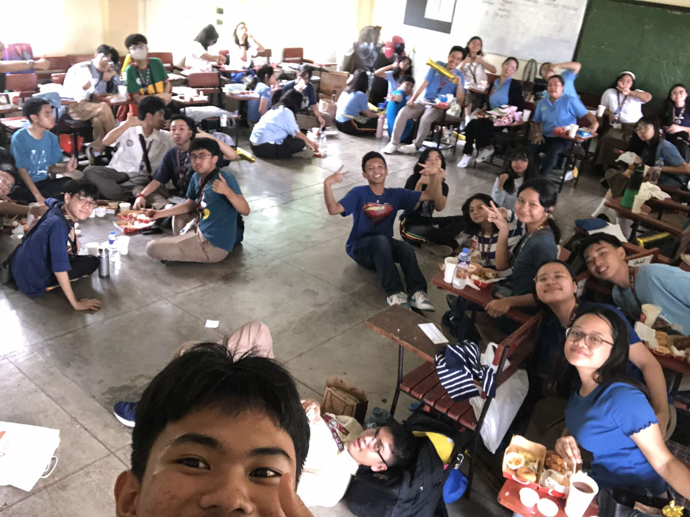
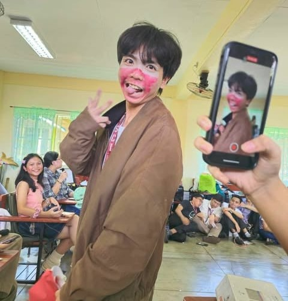

I would say 2nd quarter is the most exciting and active quarter of this school year. From science month to AP month to english month and to ESP month, it really showed how much I love the expereinces I earn from studying at LPSci. I was really energized to do all the activites and classwork that was prepared. Here I listed some of my FAVORITE activities!
Activites and Experiences - Description of activity

Tennis Tables Intramurals
It was Wednesday when the table tennis games for doubles were held. It was in the classroom of 10-Environmentalist, and this was a special experience for me because I was a player for the Yellow Bakunawas. I really enjoyed that competition becuase I got to experience going against players of different skill levels. In this photo, there you can spot me getting ready for the serve of the Green team. Though we did not win, we still did our very best and we fought with confidence and courage.

Booklandia 2024
During English month, we were tasked by the club to create a sash for 2 representatives who will together cosplay as a character from a book or movie. The sash must look relevant to the character's book. We worked hard together to make the sashes that reflect the "nation" of our characters since they came from the manga "Avatar". After classes, a program was held where the representatives will show their characters and have an introductory speech. In this photo, our 2 classmates presented themselves infront of the judges and made a quick pose.

Historical Icon Contest 2024
The AP month's activites were tiring, but they truly showed what hardwork and teamwork can achieve. Just like in booklandia, we were given a class task. But instead of just a sash, we had to make a full outfit of a histroical or cultural icon from the assigned continent. The only materials allowed were recyclable. Our icon was Marsha P. Johnson, an activist who fought for the rights of the LGBTQ community, portrayed by our classmate, Izza. We cheered her on as she showcased her outfit and this photo was taken as she glances at the camera with the determination to show her best.

Teachers' Day
September 5-October 5 is known as teachers' month. A month dedicated to our second parents, the reason why we have all this knowledge, our guardians at school, the teachers. Each class had their own program of mini-chers, where students teach the class to give the teachers a break. In the photo taken, we can see that in 9-Fairness, students and teachers bond together while playing games hosted by our class officers and emcees. Everyone is enjoying their meals and is actively participating in the games. It really goes to how the students commemorate that day by showing gratitude and love to our teachers. Thank you Ms. U for always doing your best to teach us ICT!

Mr. and Ms. Elementals
Here is the Mr. and Ms. Elementals! This was a Science PT that was assigned by group where each one had to make their own pageant show full of contestants, hosts and judges! We all enjoyed reperesenting as elements. There was drama, comedy and tension that ran through the class as the pageant took place, and we didnt care even if it was scripted! From radium to nitrogen to even astatine! The picture shows my friend, Clark as he cosplays the element polonium and models around the class!